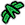
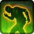

PvP in Star Wars: The Old Republic is an inherently group-oriented game mode. Various roles in groups focus on various aspects of combat. The optimal 4-man group composition for most content, PvP included, is having 1 tank, 2 damage dealers and 1 healer, while for 8-man it's the double of each.
Role
Description
Tank
Tanking is all about protecting your allies from damage and is probably the hardest of all roles to perform properly, especially in PvP. A good tank can easily turn a minor defeat into a glorious victory, but PvP tanking is more of an art than just a job, and beginners are probably better off playing damage dealers or even healers first to gain some experience and see how tanking works. Unlike healing, taking is always proactive, which makes it quite hard to play properly. This role is limited to Assassins, Juggernauts and Powertechs.
Damage
The job of a damage dealer (also called DPS for reasons beyond my understanding) is to kill stuff. You will have good damage, but limited survivability. Every advanced class can be a damage dealer.
Heal
As a healer you will be focusing on restoring the health of your allies. While you can take some proactive measures as a healer, this role is mostly reactive: you have to heal whoever's taking damage. Only Sorcerers, Operatives and Mercenaries have healing disciplines.
Classes
Player characters in Star Wars: The Old Republic belong to one of 4 base classes, each having 2 advanced classes. Advanced classes of the same base class share some commonalities, but they usually play very differently. Advanced classes are chosen at character creation and cannot be changed.
Above every character's head, on their nameplate is a small icon called the class icon, which makes it easy to immediately identify your enemy's class. The icons for base classes are not really seen in the game anymore, but they're included here as they're used throughout this guide to refer to both their advanced classes.
Advanced class
Base class
Sith Sorcerer
Sith Inquisitor
Sith Assassin
Sith Juggernaut
Sith Warrior
Sith Marauder
Operative
Imperial Agent
Sniper

Mercenary
Bounty Hunter
Powertech
Disciplines
In addition to your advanced class, you should also choose a discipline. Each advanced class has 3 disciplines: at least 2 of these are for dealing damage (3 in case of Marauders and Snipers), while the 3rd can be for healing (Sorcerer, Operative, Mercenary) or Tanking (Assassin, Juggernaut, Powertech). While there is no way to change the advanced class of a character (other than deleting it and completely starting over), discipliness can be changed at almost any time, but not in warzones or while being in the PvP queue. (This is not entirely true because of a bug. When you queue up as a group, only the person that queued cannot change disciplines, the rest can.)
The following table contains an overview of all the disciplines available in the game. For each I will also provide a rating based on how much I'd recommend that spec to try in PvP. Note that this rating is highly subjective and does not directly represent class viability for any specific purpose, especially not ranked PvP.
The dark side of the Force provides many benefits, including the ability to ward off death itself. By conjuring a series of arcane Force abilities from out of harm's way, the Corruption Sorcerer can sustain injured allies, allowing them to fight on with the power of the dark side's twisted gift.
If you want to play healer in PvP and this is your first time, even after a severe gutting recently, Sorcerer is still your best choice. Strong burst heals combined with good kiting and focus escapes make Sorcerers the strongest PvP healers at the moment.
Of all the dark arts of the Sith, little can match the spectacle and devastation of Force lightning. Summoning intense discharges of pure Force energy, the Lightning Sorcerer overwhelms enemies with punishing damage from a distance, leaving them shaken and vulnerable--if not dead.
Lightning is Sorcerers' burst damage discipline, except it hits like a wet noodle. Sadly not only its burst is lacking, but its survivability is bad, too, relying almost only on kiting. On the good side, its energy management is virtually nonexistent and its rotation is easier. There's about nothing in Lightning that Madness doesn't do better.
Delving ever deeper into the dark side of the Force can lead to madness, but it can also lead to immense power. Attacking multiple enemies simultaneously and instilling terror in their hearts, all while sapping their very life essence from afar, the Madness Sorcerer is a dark threat unlike any other.
Madness is the discipline utilizing mostly periodic damage to wear opponents down. Once there were no warzones without Madness Sorcerers, but those days have long passed. Recent buffs have once again made them an okay choice for playing damage Sorcerer.
In darkness, there is protection. A Darkness Assassin acts in defense of their allies, using the dark side of the Force to ward off attacks and launch powerful channels of Force lightning while standing their ground against even the most formidable enemies.
Despite wearing only Light Armor, Darkness Assassins make decent tanks. Combined with their ability to stealth out from a fight, they are not easy to kill and with their many great utilities they make an outstandingly good choice for objective-minded players.
From the murky depths of the dark side, the Deception Assassin emerges with a calculated plan. As the Assassin presses the attack, Force lightning accumulates within their double-bladed lightsaber and culminates in a massive discharge that can ravage the Assassin's opponent before they even know what hit them.
Strong single target burst, mostly 10 meter range, stealth, lots of control abilities – that's Deception. While it's not hard to play relatively well, if you're looking for something godmode, look elsewhere.
Hate fuels the dark side of the Force, and no one knows this better than the Hatred Assassin. Able to command dark Force powers that assault many targets at once or sap an enemy's very essence from a distance, the Hatred Assassin can also stand face-to-face against any foe.
The Assassin version of Madness, Hatred is strong in fights with many stacked enemies. Good overall damage potential but there are few reasons to play it over Deception.
As the toughest of the Warriors, the Immortal Juggernaut can withstand even the most brutal assaults. Using the Force to turn nearly invincible for short bursts of time and to deliver crushing blows to the enemy, this Juggernaut is capable of taking a beating and giving one, too.
You can't get closer to classical tanking than playing an Immortal Juggernaut. This discipline is a beast: lots of very strong defensives, Heavy Armor and your mighty pocket healers will make you truly immortal. And you have Backhand. Do I need to say more?
When embracing the dark side of the Force, vengeance can be a powerful ally. With sustained and ruthless lightsaber thrusts delivered in the lithe Shien Form, the Vengeance Juggernaut increases damage without sacrificing defense--an ideal combination of tenacity and viciousness.
Vengeance is the periodic damage discipline of Juggernauts, but the direct attacks do pretty decent burst damage themselves. While people like to write it off as "fluff damage", Vengeance can be a strong and sturdy discipline in the right hands with some of the highest overall DPS potential in PvP.
Fuelled by extreme rage, a Sith Warrior can reach new heights of destructive power. Furiously striking at one or more foes with bursts of hate and anger, the Rage Juggernaut forges ahead, the dark side of the Force providing ever more opportunities to crush and obliterate the enemy.
If you like big hits, Rage has them. While there probably aren't many reasons to choose this over Vengeance, a good burst spec always has its place. Sadly, it's inferior to its Marauder counterpart, Fury, in almost every way.
Annihilation doesn't have to be instantaneous--and that's how the Annihilation Marauder likes it. With lightsaber and Force attacks designed to bleed their foe and increasing their potency with an aggressive combat form, the Annihilation Marauder causes deep, rupturing wounds that add up until it's too late.
Still quite bursty for a damage over time discipline, Annihilation, while often termed a PvE discipline, has its place in PvP, especially in pressure compositions. Proper management of your DoTs is necessary to get this discipline right, but it is rewarding.
Agile and swift, the Carnage Marauder wins the day by way of sheer volume. As a devastating flurry of dual lightsaber strikes and Force attacks overwhelm their foe, each successful blow can serve to embolden the Carnage Marauder in their assault, making them all the more deadly.
Carnage has recently gone through a few changes that, according to diehard players of the discipline, ruined its "beauty", but it's still debated whether this made the discipline better or worse in PvP. It still features an absurd burst, but there's little reason to choose this over Fury now.
The dark side can be a powerful ally when one channels their inner fury, and no one knows this better than the Fury Marauder. Faced with one opponent or many, the Fury Marauder strikes with raging bursts of power while maintaining a balanced stance that offers protection against the enemy's attempts at obliteration.
Probably the most overpowered discipline in the game at the moment, the only thing Fury lacks is self-healing. Incredible damage reduction paired with unparalleled control immunity and a very high burst, Fury is the top damage discipline for… anything, really.
As an accomplished practitioner of the medical arts, the Medicine Operative serves as the preservative backbone of any combat team. Deploying a full complement of sophisticated gadgets to dispense healing kolto and reparative nanotech clouds to one or more targets, the Medicine Operative ensures their allies remain fit for fighting.
Easier to pin and burst down than Sorcerers, Operative healers are still not bad for PvP, especially for the objective-based warzones. Packed with stealth for team utility and lots of AoE for potentially high HPS numbers, their lack of good burst healing and relatively easy shutdown still make them somewhat inferior to Sorcerers. Also, because of the need for HoT micromanagement, Operatives are noticeably harder to play properly than the other two healers.
Striking from the shadows, the Concealment Operative surprises the enemy with a flurry of calculated attacks designed to stun and debilitate. Then, before the fight gets out of hand, the Concealment Operative can return to a position of stealth, biding their time until the time to strike reveals itself again.
Concealment is known as the king of duels, as it really excels at 1v1 situations. It is, however, a hit & run discipline: it relies heavily on dealing some burst damage, running away, healing up and coming back. The lack of any notable AoE damage, constant need to disengage and general vulnerability to all the CC flying randomly around, Concealment is only a good choice for hardcore objective-based play.
The Lethality Operative firmly believes the one true gift that keeps on giving is poison. Dispensing potent toxins using a variety of methods, the Lethality Operative's attacks take a toll over time, corroding the enemy from within until all that's left is a whithered husk that only thinks it still has a chance.
If you check the damage rankings you might be fooled into thinking Lethality is a good discipline to play, but not really seeing any in any warzones might give you a hint it's not so. The discipline is strongly based on periodic damage, but its setup time is too long and its burst is easy to negate. There isn't really a good reason to play Lethality besides being bored with Concealment.
One perfect shot has the potential to change everything, and no one is more precise than the Marksmanship Sniper. From the safety of cover, the Marksmanship Sniper ambushes the enemy and follows up with an encore of penetrating blasts that make extra sure the Sniper's job is done.
Like Immortal Juggernauts are as close to classical tanking as you can get, the same can be said about Marksman Snipers and sniping. High damage, single target hits that can hurt for a lot if unmitigated. Being the only discipline that has virtually no yellow damage, the effectiveness of Marksman is a little more determined by who you're going against.
Technology--and its application in deploying advanced weaponry--sets the Engineering Sniper apart from the rest. A variety of probes at their disposal allows the Engineering Sniper to attack from a distance with explosions, electrical jolts and waves of destructive plasma designed to eliminate any target.
If I had to summarize Engineering in one word, ridiculous would be it. 50% slow in a 8-meter wide area, infinitely replaceable. Ranged stun. Strong burst. Despite being nerfed a bit after everyone was playing this in 5.0, Engineering is still a powerful discipline.
Some Agents prefer a less direct method of eliminating a target, such as administering poison. Lethal toxins and all-consuming microbes are the domain of the walking biohazard known as the Virulence Sniper, who inflicts lethal shots and lobs corrosive grenades from a safe distance where they can witness the results of their handiwork.
Convert Lethality to Snipers and you get Virulence. If you like periodic damage disciplines, and you want to play Sniper, this is your choice.
The Bodyguard Mercenary specializes in personal-security services, positioning themselves as the best protection credits can buy. A varied array of kolto dispersement instruments provide the Bodyguard's targets with protective shells and time-release infusions, offering safe haven in even the most hostile environments.
Contrary to the common belief, a well-played Bodyguard Mercenary is not a bad healer to have, though it's nothing insanely outstanding. The 5.0 buffs to Mercenaries also made this discipline a nightmare to kill, but they are still easier to shut down than the other two healers. Pick this if you want more of a healing challenge.
The Arsenal Mercenary specializes in distance attacks, employing long-range weapons to demolish anyone unlucky enough to be in their sights. Devastating missile-fire combinations and relentless blaster volleys generate a spectacle of explosive brilliance and transform the Bounty Hunter into a virtual artillery platform.
If you're just getting into PvP, this is probably the discipline you should go with first. While Mercenary has a notably higher skill cap than most players are comfortable with, the Arsenal rotation is easy to get started with and the class' defensives are solid enough to save your skin in a few tough situations.
Taking advantage of chaos they've created is what the Innovative Ordnance Mercenary is all about. With an arsenal of explosive and piercing munitions, the I.O. Merc's barrages of missiles, grenades and weapon blasts cause lasting, destructive damage to all their enemies.
Innovaive Ordnance can still do just as much, if not a little more damage than Arsenal. There's nothing particularly weak about it, but you have to pay some attention to proper Heat and DoT management.
Launching into the fray with a jetpack-propelled attack and able to withstand powerful offenses, the Powertech trained in the Shield Tech specification takes the brunt of the assault while employing a wide range of tech-based attacks to scorch and trip up even the most formidable adversaries.
Shield Tech lacks both the "troll power" of Assassins and the sheer in-your-face survivability of Juggernauts. Once a class featuring unparalleled AoE damage to make up for its mildly competitive tankiness, even that has been taken away from them. Shield Tech serves just as well as any to slap Guard on a healer, but it offers little more than that.
Need a light? The Pyrotech-style Powertech adds fuel to any firefight with an abundance of vivid, searing flame attacks. From fistfuls of fire to missiles loaded with highly combustible compounds, the Pyrotech's arsenal allows them to never back down while making sure their enemy burns out in a blaze of destruction.
Pyrotech is so bad in PvP it's not even funny. It really is just bad.
When stalking dangerous prey, a selection of powerful, high-tech armaments can be a hunter's best friend. The Advanced Prototype Powertech's thermal detonators, gauntlet blades and magnetized bracers devastate their intended target while ensuring the Powertech remains on the bleeding edge of any engagement.
Advanced Prototype still probably has the highest burst damage of all classes, being able to annihilate an unsuspecting victim in a painfully short time. While well-equipped for offense, AP falls a bit short on defense and ends up dying easily if not supported.
If you're new to PvP and trying to find a class you can get started with, I've ranked the various Advanced Classes according to how rewarding I find them to play. Only one (the easiest) discipline per Advanced Class is listed. The ordering used in this is highly subjective.
Abilities (skills, spells, whatever you like to call them) are SW:ToR's combat actions. Most abilities come from your chosen class, but you also gain a few ones unique to your chosen discipline. Understanding how abilities work is one of the fundamental requirements to being a good player in SW:ToR.
Resources
In order to use most abilities, you will need resources. Each base class one kind of what we call a primary resource, these are Force, Rage, Energy and Heat, respectively, with some having secondary resources to manage, too. Secondary resources are required for some abilities.
Sith Inquisitor
Sith Inquisitors' primary resource is Force. Assassins have a Force pool of 100, while Sorcerers have 600. It does not mean that Sorcerers have it better: their abilities also cost more Force. Inquisitors passively regenerate Force with time, at a rate of 8 Force/second.
Sith Warrior
Sith Warriors rely on their Rage to execute attacks. Rage is different from all other primary resources in the sense that does not regenerate with time. Warriors have attacks and utilities that generate Rage to spend on more powerful abilities, up to a maximum of 12.
Fury
Marauders also have a secondary resource, Fury, that is gained when you spend Rage, and having 30 of it allows the use of Predeation, Berserk or Bloodthirst abilities.
Imperial Agent
The primary resource for Imperial Agents is Energy. Operatives have the base Energy pool of 100, while Snipers get an extra 10 Energy to spend via the Energy Tanks passive. The base Energy regeneration rate is 5 Energy/second, but Operatives get an extra 20% regeneration via their Preparedness passive; this, however, gradually declines if you run low on Energy. (The tooltip for the Preparedness passive claims that it increases Energy regeneration by 1 Energy per second, but this is wrong. The real Energy regeneration rates are 2.4/3.6/6.0 Energy/second, which is a 20% increase, not a flat +1 per second.)
Energy
Regeneration rate
Operative
Sniper
20
2.40
2.00
20
60
3.60
3.00
60
6.00
5.00
Tactical Advantage
Operatives' also have a secondary resource, called Tactical Advantage. Damage specializations can have 2 Tactical Advantage stacks at a time, while the Medicine discipline allows you an extra for a total of 3.
Bounty Hunter
While it looks different, Bounty Hunters have essentially the same resource mechanic as Agents do. The Bounty Hunter resource is called Heat, and works as a "reverse Energy": your Heat dissipates over time at a base rate of 5 Heat/second, while abilities generate it. Also, if you go above 40 Heat, your dissipation rate will decrease, making it harder to cool down and propably necessitate the use of Vent Heat.
Heat
Dissipation rate
40
5.00
40
60
3.00
60
2.00
Supercharge
Mercenaries' secondary resource is called Supercharge, which builds upon using certain abilities. At 10 stacks of Supercharge, it can either be used to activate Supercharged Gas or the Mercenary raidbuff, Supercharged Celerity.
Stats
Related to abilities and attacking, let me first list what stats are there, then talk a little about them:
Primary stats:
Mastery: The main stat, increases your all-around damage and healing and your critical chance. Before 4.0 base classes used to have different main stats, but Bioware decided it was too hard and merged it all into Mastery.
Endurance: The more endurance you have, the more HP you will have. Each point of Endurance will give you approximately 12 points of health.
Secondary stats:
Power: Much like Mastery, but increasing your damage/healing by more whilst not providing extra critical chance.
Defense: Allows you to completely avoid melee/ranged attacks. Not really useful in PvP, I'll talk about it later.
Tertiary stats:
Accuracy: Increases your chance to hit the target, or, if above 100%, reduces your target's defense chance.
Alacrity: Provides an overall speedup to your abilities.
Critical: Increases both your chance to critically hit and the amplitude of those hits.
Shield rating: Increases your chance to shield attacks.
Absorption rating: Increases the damage reduction on shielded attacks.
Diminishing returns
Most of your stats give, what the community likes to call them, diminishing returns. It means the respective gains from investing any number of stat points is not linear, or, in simpler words, if you get twice as much of a stat, the bonuses from it won't double. (You can see the exact formulas for example here. The only change for level 70 is that the stat divisor in the exponent is not 65 anymore, but 70.) And, while most people talk about it as if there was any, there's no single point of diminishment. The functions are monotonically increasing, meaning if you get more of a certain stat, you'll always get more powerful by it. Also, they don't have any "hard" breaking points, they decline "gracefully".
There do, however, exists numeric values of various stats from which it is more beneficial to invest in other stats, because they will provide bigger Mitigation/DPS/HPS bonuses than investing in your one stat. Finding this optimium value is not a trivial task and is almost impossible by pure experimentation. Class guides and sites like this have some guidelines on how much of each stat you should take for optimal performance. The following table lists some properties of diminishing stats:
Stat
Hard cap
Median rating
Second tertile
Defense chance
30%
1717(.45)
2722(.10)
Shield chance
50%
1873(.31)
2969(.12)
Absorption percentage
50%
1561(.09)
2474(.27)
Alacrity percentage
30%
1789(.01)
2835(.52)
Accuracy percentage
30%
1431(.21)
2268(.42)
Critical chance (critical)
30%
1144(.97)
1814(.73)
Critical chance (mastery)
20%
5202(.66)
8246(.02)
Critical multiplier
30%
1144(.97)
1814(.73)
Targeting
Every ability has a predefined kind of target it can be activated on. These are:
Target type
Meaning
Self
The ability is activated on the caster. These can include friendly abilities (most defensives are self-targeted), or hostile ones, in which case they hit enemies in the vicinity of the caster.
Enemy
The ability is activated on the primary target of the caster, that must be attackable. The standard "hit the target" kind of attack.
Friendly
The ability is activated on the primary target of the caster, that must be friendly. Mostly heals belong here.
Ground
The ability is activated in an area chosen by the caster. Not all classes have access to ground targeted abilites. When a ground targeted ability is activated, the cursor temporarily turns into a targeting reticule that can be used to mark the area of effect on the ground. Ground targeted abilities can also be quickly activated centered on your main target (friendly or hostile) if you doubly activate (click the icon or press the keybind twice) the ability.
Ground self
This is like ground targeting, but the area of effect is not placeable, it's always at the caster's current location. (The difference between this and the self-targeted abilities is that self-targeted effects always follow the caster, while Ground Self targeting just leaves an area of effect behind at the caster's location which does not move, even if the caster does.)
Abilities can also be single-target or AoE (area of effect), depending on whether they can only affect one or multiple targets at a time. Except for ground targeted abilities, which are by their nature area effects (exceptions like the Throw the Huttball exist, but that's a special one) each combination of targeting type and target cardinality exist.
Types of effect areas
Area of Effect abilities affect not just their primary target (if they have one) but multiple (up to a usual maximum of 4 or 8) potential targets in a certain area. The areas of effect are three dimensional bodies in space and if they have a ground marker, it is of the shape of their cross section with the ground.
Shape
Description
Example
Cone (triangle)
Conal attacks are self-centered, hitting everyone in a cone of a ceratin angle in front of you.
Activation happens when you click an ability's icon on the UI or press its associated keybind. Not all abilities exert their full effects on their targets immediately, however. There are 3 types of activation times:
Type
Description
Example
Instant
Instant abilities activate instantly and their activation is not interruptible. If you can use them, they will fire. A new change in 5.0 is that melee now only have instant abilities.
Channeled abilities also activate instantly, but they apply their effects incrementally during their use. The earlier they are interrupted the less damage/healing they do.
Casts are somewhat similar to channels in that they are interruptible, cause a cast bar to appear, but they do not do anything till they are finished. Unlike channels, casts should be interrupted as late as possible, since this causes the caster to waste the most time.
Most channelled and cast abilites require you to stand still or they get interrupted by movement. Some, however, are possible to be used on the move, though they might need utility points to make this work. (Force Mobility for Sorcerers, Calculated Pursuit for Snipers and Thrill of the Hunt for Mercenaries.) These casts/channels are subject to any hostile interrupts (interrupt/knockback/stun), and, while you cannot cancel them using movement, you can press the Esc to stop them from progressing any further.
Pushback
Pushback is what happens when you get attacked while casting: your cast progress goes back a little so your casts take longer to complete. Most disciplines heavily dependent on casts have some passive pushback immunity/reduction, making the effects of this mechanic way less noticeable.
Travel time and delayed damage
Most attacks have a so-called travel time while others just work with some delay. Even though the activation happens instantly, you might just launch a projectile that takes some time to reach its target. While travel time is short and usually doesn't matter, it's important to know which abilities deal damage truly instantly and which have a travel time. (It can easily mean the difference between losing an objective and keeping it!)
Cooldown
Some abilities are more powerful than others, and some do very high damage or have otherwise very good utility. Just being able to use them without any limitation would ruin the game. Because of this, most abilities have a cooldown, a given amount of time that must pass before a certain ability can be used again.
The global cooldown
In order to not have the game overtaken by automated macros and give time to react, most abilities share a global cooldown. When an ablity is activated, for 1.5 seconds (by default) you cannot activate anything else that's also on the global cooldown.
Quickbars for a Concealment Operative. Note the shading on most abilities: those are affected by the active GCD and cannot be used before it expires. The unshaded abilities are off the GCD.
Activation off the GCD
If you look at the screenshot above, you should notice that not all abilities (mostly defensive and offensive buffs) have the partial shading that represents the global cooldown. These are, as we call them, off the GCD, and can be used anytime. Well, almost anytime.
How these abilities work with the global cooldown and various activation types is nontrivial. The least problematic type of activation is instant: off-the-GCD abilities play nicely along with those. As you'd expect, you can use one instant ability per GCD, but you can use your off-the-GCD defensives anytime, even during the GCD windows between normal activations.
Channels and casts are more complicated. If you're channelling something and you use something that's off the GCD, your off-the-GCD ability will activate, but your current channel will be cancelled. For example, if you wish to pop Thermal Sensor Override before Blazing Bolts, but mistime your keypresses a bit and end up hitting it a split seconds afterwards, the Blazing Bolts channel will cancel and go on cooldown while Thermal Sensor Override remains active for the next ability. Also, if you pop Energy Shield during Blazing Bolts, you can say goodbye to the remaining damage of that channel.
Casts, on the other hand, do not get interrupted by off-the-GCD ability usage. Not only that, while casting, your off-the-GCD abilities will not be usable and only give you an error message. For example if you're playing healer and you're low on HP and you want to cast a bigger heal to get yourself back up, but in the meantime you realize it won't finish in time, quickly reaching for a defensive will not help you. What you can do in this case, is to interrupt the cast first (by pressing Esc or moving a bit), then use the defensive.
Toggles
Two abilities, Stealth and Guard can be switched on and off. Their application is always subject to the global cooldown, but their removal is not. There's, however, a small bug about it. Trying to deactivate a toggled ability during an active GCD will seem to not do anything, except, if you look at your quickbars carefully, appear to reset your global cooldown. (There's no secret exploit here, the GCD does not actually get reset, only the shading on the UI does.) If you try to deactivate for a second time, you will see that now it succeeds, even if you're still within an active GCD.
Alacrity
Stacking Alacrity Rating is your way to speed up most things you do in combat. In particular, Alacrity speeds up:
the global cooldown,cast/channel times,resource regeneration,ability cooldowns,effects you apply.
There's a subtle but important distinction when it comes to alacrity: it's not a flat time reduction, it increases the speed at which things are executed. (Think of it this way: if you double the speed at which you're doing something, i.e. you have 100% alacrity, it halves the time that thing takes, not makes it zero. So the formula is not (original time) * (1 - alacrity) but (original time) / (1 + alacrity)) If you have, for example, 8% alacrity, that means
the global cooldown will be 92.59% of the original (1.38 seconds),a 2 second channel will only take 1.85 seconds,in case of an Assassin, you will regain resources at a 8.64 Force per second rate,an ability that would take 12 seconds to be usable again will be ready after 11.11 seconds,a DoT that would take 18 seconds to do its damage will be done in 16.66 seconds.
Alacrity on effects
An interesting property of alacrity is how it affects DoT/HoT times, especially when they get refreshed. For example Creeping Terror, one of the main DoTs of Madness/Hatred, takes 18 seconds to do its full damage by default. With 10% alacrity, this is shortened to 16.36 seconds. Here's the part you might not know: the alacrity of a DoT/HoT is determined when it's applied and does not change when it gets refreshed on the target. Let's see how this plays with the Sorcerer ability, Polarity Shift, which, among other things, provides a 20% alacrity buff. If you apply Creeping Terror before using Polarity Shift, it will use your normal alacrity rate. If you now reapply it using Polarity Shift without letting it fall off first, you will notice that the DoT does not get a speedup. If, however, you apply it first with the 20% alacrity buff, using the 10% example above, it will keep ticking for only 13.85 seconds only. Even if you refresh it, as long as you don't let it fall off the target, it will keep this tick rate.
If you have DoT/HoT effects that can have 100% uptime on the target, it's free DPS/HPS to apply these while your alacrity is the highest and just keep refreshing them.
Alacrity and the GCD
A poster on Reddit has noticed that alacrity isn't "smooth" when it comes to the global cooldown, as the global cooldown gets rounded up to the nearest tenth of a second. This means that if your GCD would be anywhere above 1.4 seconds, it becomes 1.5 seconds as if you didn't have any alacrity at all. A GCD above 1.3 seconds becomes 1.4 seconds and so on. The more rounding you have, the more time you waste between two activations.
The following table lists the amount of alacrity you need to obtain a specific GCD. A GCD of 1.2 seconds would need an alacrity rating of 4625, but the current stat budgets only allow for 3696. Global cooldowns below that are theoretically unobtainable with gear only, as alacrity from gear is hard capped at 30%.
GCD (seconds)
Minimum alacrity (%)
Minimum alacrity (rating)
1.5
0%
0
1.4
7.143%
702
1.3
15.385%
1857
1.2
25%
4625
1.1
36.364%
-
1.0
50%
-
Attack types
Attack types determine what kind of resistance an attack is rolled against, i.e. whether they will hit at all. Attack types are:
Melee (weapon)
Ranged (weapon)
Force (spell)
Tech (spell)
For all intents and purposes, spell (Force and Tech) attacks are the same, they are differentiated only for lore reasons. When you hit anyone with a weapon (Melee or Ranged) attack (referred to as M/R), the flytext number that pops up on your enemy showing how much you hit for is white, therefore these attacks are usually referred to as white damage. Force and Tech (F/T from now on) attacks have their flytext colored yellow, therefore, surprisingly, they are called yellow damage attacks. It is important to know which ability is which kind, because most defensives will only work for one of the two main types. For example Force Shroud provides increased resistance to F/T attacks, but not to M/R.
Damage Types
While attack types determine whether an attack will hit your target at all, damage type determines how the damage is mitigated, especially by shielding, and isn't really important in most scenarios, since the active defensive cooldowns are for specific attack types, not damage types. If you're interested anyway, here are the main damage types:
Kinetic
Energy
Elemental
Internal
Kinetic and Energy damage is subject to mitigation by armor and partial absorption by shield. Internal and Elemental damage bypasses both of these and is only mitigated by specific reductions for these damage types, like the Resistant buff applied by healers.
Damaging effects can also have some auxiliary tags attached to them which can also determine their mitigation in some cases, these are mostly:
area of effect,direct,periodic
damage abilities. These are not necessarily exclusive: an attack can be both area of effect and periodic. (See Toxic Haze, for example.) In some cases it is good to know which of these categories some damage belongs to; Saber Reflect, reflects single-target ranged, Force and Tech attacks only, allowing Melee and AoE of any kind to pass through it.
The ability window tells you what kind your abilities are of.
Hit mechanics
When you try to land a hit, it's subject to what's called an accuracy roll. The accuracy roll is governed by two main chances: the Accuracy (the chance to hit) of the attacker and the Defense Chance (the chance to avoid the hit) of the target. Accuracy over 100% reduces the target's chance to defend against the attack. Everyone except tanks has a base Accuracy of 100% (101% with the bonus from the companions), a 5% chance to defend against M/R attacks (10% for Inquisitors) and in most cases there's no baseline resistance against F/T. (Tanks have an extra 10% accuarcy provided by their disciplines.) If the attacker's Accuracy is above 100%, the target's chance to defend is lowered by the surplus Accuracy. That means if you're trying to hit a Sorcerer with a M/R attack and you have 104% Accuracy, your target will have their 10% base defense chance reduced by 4%, leaving it at 6% effective. If the accuracy roll fails the attack does not connect and does nothing.
Only hostile actions are subject to accuracy rolls: friendly ones (like heals) can never miss or be defended against.
Once the hit itself is confirmed, it's time to determine the type of the hit. This has 3 possible outcomes: normal, shielded and/or critical.
Every attack has a certain critical chance, that is, by default, determined by the caster's critical chance. Some attacks have 100% critical hit rates (we call these autocrits) while others might just receive some passive buff to their critical chance based on your chosen discipline. Also, if the target has a shield equipped in their offhand slot and the attack deals kinetic or energy damage, the target has a certain chance to shield the attack.
The hit has a chance equal to the attacker's critical chance to be a critical hit and a chance equal to the target's shield chance to be a shielded hit.
If the type of hit is a critical, it does extra damage according to the attack's critical bonus. If the attack has more than 100% of critical chance, the critical bonus multiplier also gets multiplied by the critical chance. (If the critical bonus is 60%, it does 60% extra damage.) If the hit is shielded, the damage is reduced according to the target's absorption rate.
Note that an attack is not the same as an ability activation. Lots of abilities deal multiple hits (you can see multiple flytext numbers popping up). These rolls are calculated for each and every single hit separately.
If you're looking for more info on combat mechanics, I strongly recommend to check out the theorycrafting articles on Dulfy, they go into much greater detail.
Gearing
I will not give precise gearing numbers for each discipline; if you are interested in those, please look up a class guide. I will, instead, just talk a bit about gearing in general. Please read and reread everything in the Abilities section until you fully understand it all.
Tanks
Tanks are broken in PvP for a long time now. In PvE most of the damage done by NPCs is M/R and NPCs do not have critical hits, so tanking works properly in PvE: some of the damage is defended against while the rest has some chance to be shielded.
In PvP, tank stats are close to being outright useless. If you read carefully till now, you know that Defense Rating only increases your chance to defend against M/R attacks and has absolutely no use against F/T. Most player abilities are F/T, so having lots of Defense Rating stacked gets you absolutely nowhere.
Shielding by design doesn't work against I/E damage and the extra survivability gained by having a higher shielding rate is still mostly subpar to the extra damage you can muster by not stacking shielding stats.
For PvP you do not gear a tank as a tank. The surviability benefits are minimal while the DPS loss is substantial compared to just gearing like to a damage dealer. (This method of gearing is called skank gearing.)
If you're playing a skank, get tank armorings along with the tank setbonus, use a shield as an offhand (not a generator/focus), otherwise gear as a DPS, choosing high-endurance modifications (distinguished in their name with the letter B, for example Lethal Mod 52B) instead of the standard low-endurance ones. You do not need any accuracy for tanks, as the discipline passives will provide an extra 10% for you.
At this time properly best-in-slot gearing a skank is a quite long process, especially since the legendary B mods only drop as separate items from command crates and they have an extremely low drop rate.
Damage dealers
As a damage dealer you should focus on Mastery/Power as your primary/secondary stat, while getting as much Critical Rating, Alacrity Rating and Accuracy as you need. (Refer to class guides for the exact propotions.)
There's an ongoing debate whether you actually need Accuracy in PvP. Some people will say no, you absolutely don't, while others will claim that some Accuracy cannot hurt.
Because most of your enemies will have 0% chance to resist F/T attacks, if most of your attacks are of this kind, it's obvious you should not use any Accuracy: the default 100% will suffice. If, however, the discipline you're playing has some significant M/R damage, it is a sane decision to have some extra Accuracy to counter the natural defenses. Personally I'd recommend 5% as it covers the base defense chance. You can also decide to not use any Accuracy at all and invest those points in higher damage, but then be prepared that some of your attacks will miss. It is up to you to decide whether the extra damage is worth the missed attacks or not.
Healers
Same as damage dealers, except you have zero need for Accuracy.
Set bonuses
Set bonuses are advanced class/role specific bonuses you can collect. If you get a piece of gear with a setbonus, the bonus is tied to the armoring in it, so you can freely move it around while not losing the bonus. Each set has 3 bonuses, having one for 2, one for 4 and one for 6 pieces of the same set equipped. Unlike in some other games, there's no point in mixing various setbonuses, you should only go with the one that's for your discipline.
6-piece setbonus for DPS Powertech.
Advanced class
Role
Setbonus name
Effects
Force-Master
(2) Thundering Blast or Force Leech increase damage dealt by 2% for 15 seconds. Cannot occur more than once every 30 seconds.
(2) Activating a healing ability has a 15% chance to grant Force-Mystic's Critical Bonus which causes your next Dark Infusion to be a critical. This effect can only occur once every 30 seconds.
(6) Deflection's duration is increased by 3 seconds and its cooldown is reduced by 10 seconds.
Stalker
(2) Ball Lightning and Leeching Strike increase damage dealt by 2% for 15 seconds. Cannot occur more than once every 30 of seconds.
(4) Reduces the cooldown of Recklessness by 15 seconds.
(6) After activating Voltaic Slash and Thrash your next Assassinate and Maul will critically hit. This effect can only occur once every minute.
Weaponmaster
(2) Battering Assault increases damage dealt by 2% for 15 seconds. Cannot occur more than once every 30 of seconds.
(4) Reduces the cooldown of Frenzy by 15 seconds. Additionally, activating Berserk increases all damage dealt by 3% for 10 seconds.
(6) Activating Ravage or Dual Saber Throw will grant Weaponmaster's/Challenger's Critical Bonus making your next Gore, Furious Strike and Annihilate critically hit. This effect can't occur more than once every minute.
War Leader
(2) Crushing Blow increases damage reduction by 2% for 4 seconds.
(6) Increases the duration of Blade Turning by 3 seconds, and the duration of Invincible by 5 seconds.
Vindicator
(2) Sundering Assault increases damage dealt by 2% for 15 seconds. Cannot occur more than once every 30 of seconds.
(4) Increases the critical chance of Ravage by 5%.
(6) Activating Force Scream will grant Vindicator's Critical Bonus making your next Impale and Furious Strike critically hit. This effect cannot occur more than once every minute.
Enforcer
(2) Laceration and Corrosive Assault increase damage dealt by 2% for 15 seconds. Cannot occur more than once every 30 seconds.
(2) Activating a healing ability has a 15% chance to grant Field Medic's Critical Bonus which causes your next Kolto Injection to be a critical. This effect can only occur once every 30 seconds.
(2) Activating Explosive Probe, Ambush and Lethal Shot increases damage dealt by 2% for 15 seconds. Cannot occur more than once every 30 of seconds.
(4) Reduces the cooldown of Target Acquired by 15 seconds, and activating either ability restores 15 energy.
(6) Laze Target now has 2 charges and its duration is doubled.
Eliminator
(2) Heatseeker Missiles and Serrated Shot increase damage dealt by 2% for 15 seconds. Cannot occur more than once every 30 of seconds.
(4) Energy Shield's cooldown is reduced by 15 seconds.
(6) Activating Unload and Blazing Bolts will grant Eliminator's Critical Bonus making your next Heatseeker Missiles and Mag Shot critically hit. This effect can only occur once a minute.
Combat Medic
(2) Activating a healing ability has a 15% chance to grant Combat Medic's Critical Bonus which causes your next Rapid Scan to be a critical. This effect can only occur once every 30 seconds.
(6) Activating Flame Burst and Magnetic Blast will grant Combat Tech's Critical Bonus making one of your next Energy Burst and Immolate critically hit. This effect can't occur more than once every minute.
Consumables are single-use items you can use to power up your character.
Stims
Stims are long-lasting powerups, crafted by Biochemists. The Artifact (purple) version of the stims last for 8 hours and provides the most stats. You can either craft them for yourself or buy them from the GTN.
Increases Mastery by 240 and Power by 99 for 480 minutes. Only one stimpack can be active at a time. This effect persists through defeat.
In general, the Fortitude stims are recommended for tanks, Proficiency ones for damage dealers that use lots of white attacks and need Accuracy in addition to what they get from gear, Versatile ones for everyone else.
Be aware that the latest stims share their names with the previous tier ones, but those provide less stats. Always be sure to check the icon before you craft/buy!
If you have Biochem as your crafting skill, you will be able to use the reusable version of the stims. While these still need to be refreshed every 8 hours, the item is infinitely usable.
Restores health and additional health over 15 seconds. Only usable once per fight. (Cooldown: 1.5 minutes). Health restored scales by level up to level 70.
Increases damage reduction by 15% for 15 seconds while fighting other players. Only usable in Player versus Player environments. (Cooldown: 3 minutes)
Warzone Medpac and Warzone Adrenal come as a reward from the daily PvP missions as well as they are purchaseable from vendors both on the Fleet and in warzones (except in arenas), while Advanced Polybiotic Medpac MK-2 is crafted and only usable by Biochemists. Medpacs can be used only once per fight, but stealthers can use Force Cloak/Cloaking Screen to get out of combat and reset this limit. (All medpacs share a common cooldown, so you cannot use both during a single fight.) Adrenals don't have this restriction.
Grenades
Should you find the amount of CC in the game inadequate, grenades come to the rescue. They are crafted by Cybertechs, and, like stims, you can either make them yourself or buy them on the GTN. While situationally useful, you can still perform just fine if you choose to not use them. The most common type of grenade used by PvP'ers is the Seismic one. Players affected by these grenades receive the Bastioned buff, making them immune to further consumable grenades for 3 minutes.
Sets up to 5 enemy targets in a 6 meter area ablaze, dealing elemental damage over 12 seconds. (Cooldown: 180s). Damage dealt scales by level up to level 65.
Shocks up to 3 targets in the area for energy damage, and stuns them briefly. Tougher enemies are stunned for a shorter duration. (Cooldown: 180s). Damage dealt scales by level up to level 65.
Deals kinetic damage to up to 5 targets within 6 meters of the selected area, and reduces movement speed by 70% for 9 seconds. (Cooldown: 180s). Damage dealt scales by level up to level 65.
Disrupts the earth beneath all targets within 6 meters of the selected area, dealing kinetic damage and knocking them unconscious for 5 seconds. Damage causes this effect to end prematurely. (Cooldown: 180s). Damage dealt scales by level up to level 65.
Effects
Effects, further categorized into positive (buffs) and negative (debuffs) are displayed on your UI, (by default) above your character portrait. With a few notable exceptions, buffs can be dispelled (right-click on their icon; "click off"), while you have to suffer through the debuffs.
Buffs to the left, debuffs to the right.
There are 3 cases where it might be beneficial to manually click off buffs:
There are lots of effects in the game and it would be near impossible to list them all. Most of them are just damaging abilites either with the same icon as the ability they are applied by (you can, for example, see the debuff from Affliction on the screenshot above, which is just the DoT from the respective Sorcerer ability.) In the table below you will find some of the most common and important general buffs/debuffs you will meet during PvP. If you want to check out each effect the game has in detail, head over to Jedipedia, where they have all abilities dissected. Note that icons are reused a lot in the game, so it is entirely possible that you will sometime see the same icon with an entirely different effect. Again, the list is by no means exhaustive.
Effect
Description
Positive effects (buffs)
Unshakable
Cannot be interrupted.
Bastioned
Protected from Cybertech Grenades.
Guard
Damage taken and threat generation reduced. Redirecting 50% of damage from players.
Out of range
Negative effects (debuffs)
Slowed
Movement speed reduced.

Trauma
Healing received reduced by 20%.
Stunned
Unable to act.
Afraid
Unable to act. Breaks on damage.
Sleeping
Blinded
Lifted
Incapacitated
Hindered
Cannot activate or benefit from high mobility actions.
Control effects
CC (Crowd Control) is the umbrella term for abilities that can be used to control your enemies. While it's mostly used to refer to incapacitating effects (hardstun/mez), it also includes ballistics (push/pull) and movement impairment (slow/root).
Incapacitating
There are 2 kinds of incapacitating CC: hard and soft stuns (mezzes). Every class has access to a hard stun and all except Powertech have a mez. General hard stuns have a 4 second duration, while mezzes, except that of the Warriors, are 8 seconds. Tank classes also have a second, shorter hard stun.
Unlike hard stuns, mezzes end prematurely if their target takes any kind of damage. This includes damage from periodic effects. It is pointless to mez anyone that has any DoT on them or is being focused. (Except: Lethality/Virulence, as their mez doesn't break from their own DoTs.) Some exceptions apply (like using your mez as an interrupt), but in general only ever mez unbothered hostiles.
The Effect Type colum contains the icon of the applied effects while the Dispel Type tells you what kind of cleansing can remove the effect (F = Force, T = Tech, M = Mental, P = Physical). (More on that later.)
Effect Type
Breaks on Damage
Stunned
No
Knockdown
Carbonized
Blinded
Yes
Asleep
Lifted
Incapacitated
Afraid
Hindering
Hindered
Cannot activate or benefit from high mobility actions.
Hindering is a "quasi-CC" effect that doesn't count as control, but can easily be seen as one. The point of hindering is that it diables "high mobility actions and escapes", making the targets susceptible to being burst down. The main source of hindering in the game is Electro Net, a Mercenary-exclusive ability. Other sources include Marauders' Gore and the acid traps in the Quesh Huttball map. While Gore can be timed well to be effective, its 1.5 second duration of hindering usually isn't too punishing. Hindering, unlike control effects, does not build or is affected by Resolve. This means you can effectively use Electro Net on a whitebarred target to almost fully negate it.
Electro Net
Electro Net
Instant
Energy:10
Cooldown:90s
Range:30m
Fires an electro net that ensnares the target, reducing its movement speed by 50% and dealing energy damage over 9 seconds. While affected, a target that moves takes 20% more damage from electro net, and this effect can stack up to 10 times on enemy players or 5 times on any other target. Additionally, the electro net hinders the target, preventing the use of high mobility actions and escapes such as charges, vanishes, and speed boosts. Lasts 9 seconds.
Electro Net has 3 distinct effects: a slow, the hindering and the damage. Electo Net's damage is minimal if you don't move while it is on you, but even if you do, even with the 200% damage increase it's not your biggest concern.
It's the hindering that kills. When E-Net is applied, it comes with a 50% slow and the dreaded hindering that disables the use of escapes and high-mobility actions, and, just for the hate of Sorcerers, Force Barrier, which is neither.
If you get netted at low health, do not expect to survive it, unless you have your CC breaker or other strong defensives available. There's only one thing that can partially counter Electro Net, and that's your CC breaker. I said partially, because while it removes the hindering effect and the associated slow, the damage-over-time component of Electro Net is unremovable, even by purging. So even if you break it, do not expect to stealth out and stay hidden for long, because the damage will break your stealth.
The only way to avoid Electro Net is to resist it altogether (have the immunity from Force Barrier, Force Shroud, Mad Dash, Exfiltrate (for Concealment), Covered Escape or some other tech resistance up when the Net hits you, or reduce the Merc's tech accuracy (if you have such an ability) and hope for a miss). Also, the slow component of Electo Net will not be applied if you are immune to movement-impairing effects when it lands.
If you are in a position to do so, CC your attacker(s). Hardstun or mez, doesn't matter, just CC them so they cannot damage you.
Move behind cover if possible. If you get netted in the open, this option is out.
Use defensives. Unless you are a Sorcerer, your best defensives are not affected by Electro Net. If you are a Sorcerer, this option is out.
Use your breaker and escape.
Expect to get focused after being netted. You have to survive for 9 seconds in an environment where you cannot escape, or waste your breaker on it and enjoy the stuns afterwards. Usually there's no good way to deal with a well timed net.
Dealing with multiple Electro Nets
Open your chat window, type /stuck, hit enter and enjoy denying them the killing blow. On a more serious note, you will not survive multiple nets without considerable support from your team.
Physics
Movement impairing
Slows
These slow the target, reducing their movement speed. Unless the target has some kind of immunity to movement impairing effects (like
Hydraulic Overrides for Bounty Hunters), slows always work.
Immobilizes (roots)
These make it impossible for your opponent to move. Operatives have access to a specially evil version of this effect via Crippling Slice that also disables turning. Full resolve prevents being rooted, when used on a whitebarred target, abilities that would root apply a 50% slow instead.
Ballistic
Pushes and pulls belong to this category. Only Darkness Assassin and Powertech (via Force Pull and Grapple) have pulls. Inquisitors have Overload, which is a frontal-only knockback, Mercenaries and Snipers have Jet Boost and Cover Pulse, which are 360° knockbacks, and Juggernauts have Force Push, which is single target. Of these Overload is the weakest (with a ballistic momentum of 1.9), followed by Jet Boost (2.2) and Cover Pulse and Force Push (3.0). Operatives can spec into a single target knockback via Mobile Strategies that also has a ballistic moment of 1.9.
Resolve
In order to counter some of the control there is, the game has a (pretty badly designed) Resolve mechanic. Resolve is displayed around the character portrait on the UI (a.k.a. "the gangbang-meter"). Whenever someone suffers a CC effect that is not movement impairment (that's right: slows and roots do not build any resolve), some of the Resolve bar fills up. When a character is on full Resolve, the bar turns white (hence the term "whitebarred") and rapidly starts to delplete. While the Resolve bar is white, hostile incapacitating, ballistic or immobilizing effects will not apply to you and immobilizes slow you by 50% instead. Resolve is an important mechanic and not being familiar with how it works can easily mean a lost objective and eventually a lost match.
Building-up Resolve. No effects.
Full Resolve. Immunity to incapacitation (mez/stun) and immobilization (root).
Expiring Resolve. Still in effect until it fully depletes.
Resolve in numbers
Let's see how it all looks in detail. If you hover over your Resolve bar with your mouse, it will say 0/1000 in the tooltip, or however much Resolve you currently have. A hardstun (one that does not break when taking damage), by default, generates 200 Resolve when applied for every second of its full duration, so a standard 4 second hardstun is 800 Resolve. A mez (that breaks on damage) is only 100 Resolve per every second of its full duration, but usually they also last longer. A ballistic effect goes for 200 Resolve, except for Juggernauts' Force Push, which only generates Resolve for the knockdown, which, being a 2 second hardstun, makes 400 Resolve.
Despite how the tooltip implies, your Resolve can go all the way up to 1500, but the whitebar will trigger as soon as you hit 1000. The immunity kicks in as soon as the bar turns white (so if somebody hardstuns you for 800 Resolve, then mezzes for another 800, and then you get another stun while the mez is in effect, it will not apply), but your Resolve will start to deplete only once all your incapacitating effects have worn off. What this means is that in the above scenario, while you immediately get your 1500 Resolve and a whitebar when the mez applies, your Resolve will not delpleting until that mez actually ends.
Resolve expires at a 100/second speed, providing immunity to incapacitating effect and turning any roots into 50% slows until it reaches 0, when the whole process starts over.
Your Resolve declines even if you are not whitebarred at a rate of 50 Resolve every 2 seconds, but, like the whitebar, this does not tick while you are incapacitated.
Resolve for overlapping CC
You might notice that if, as a Powertech, you Electro Dart someone and then immediately use Carbonize, the target won't end up having 1300 Resolve, but only 800. If you try to incapactiate somebody while your target already has an incapactitating effect on them, your stun/mezz will only build its normal Resolve minus the Resolve for the leftover part of the previous CC, but 0 at minimum.
In the Powertech example, Electro Dart builds 800 Resolve for 4 seconds of hardstun. One GCD (1.5 seconds) later 2.5 seconds of that hardstun remains, which equals to 500 Resolve. Carbonize, being a 2.5 second hardstun, would build 500 Resolve on its own, but from this the leftover Resolve from Electro Dart, which is 500, gets subtracted, leaving 0. If in the same example you sneak in another single-GCD ability between the two stuns, the leftover stun time from Electro Dart would be only 1 second, which means 200 Resolve, so you'll get 300 Resolve for your Carbonize. Note, however, that you cannot take Resolve away this way: if your target gets hardstunned for 4 seconds by someone and 1 second later you apply a 2 second hardstun, it will not reduce the target's Resolve, even though 400-600=-200.
Even though you cannot reduce a target's Resolve, you can easily reduce the effectiveness of the mezzes in your team if you attack/stun at the wrong time. Here's for example the Haunted Dreams passive for Assassins:
Haunted Dreams
Passive
If your Whirlwind breaks early from damage, the target is stunned for 2 seconds. In addition, Whirlwind activates instantly.
The stun from the broken Whirlwind counts as a new effect, building its own Resolve (400). What happens if Whirlwind gets broken after 7 seconds? The remaining Resolve for Whirlwind is 100, meaning the extra 1 second of incapacitation you get from Haunted Dreams will cost you 300 Resolve. If the same break happens at 2 seconds, 6 seconds of Whirlwind go to waste (600 Resolve), so not only you will lose out on 4 seconds of CC, you also won't build a single point of Resolve.
Using your CC breaker
Every class has access to a "breaker" (Unbreakable Will for Inquisitors, Unleash for Warriors, Escape for Agents and Determination for Bounty Hunters), an ability that "Purges all incapacitating and movement-impairing effects", i.e. it removes any CC you have on you. Note, however, that it does not provide immunity to them; you can be CC'ed immediately after you broke. The baseline cooldown on every breaker is 2 minutes, which can be reduced by some utility choices. Even then you'll find that there's way more CC in the game than you can break, so you have to be smart about when to use your breaker.
In general, do not break the first CC you get. I know, being CC'ed is annoying, but you'll get CC'ed anyway. Save your breaker for situations where you'll actually need it, like your node is being capped or you're going to die unless you immediately break. Also take a moment to consider what you're going to do after you break, if you choose to do it. If you're on very low HP and you're getting focused hard, it might not matter if you break that stun; you'll die anyway.
Try to use the breaker when you're on full Resolve. Because full Resolve provides CC immunity, at least you won't be stunned right after you use your breaker, making it a complete waste.
Do not use breaker on anything but stuns and mezzes. Very few exceptions apply to this rule. The "Operative rooting you is annoying" is not one of them. Clearing slows using your stunbreaker is outright sacrilegious.
Group play
Class utility
I could also have called this section Helping Your Allies. PvP is not a solo job; you have a team, and playing in a way that only benefits you is not only selfish, but will also limit unleashing your class' full potential. Let me put it more clearly: if you only ever care about yourself and blindly tunnel your target in PvP, you are bad.
Class buffs
Class buffs are abilities that provide long-term (1 hour) buffs to all members of your group. Every base class has access to a class buff. You always get the buff for your own class at level 1, and this also applies the buffs for other classes for which you have completed Chapter 2 of their respective class stories. If you do not have all class buffs unlocked, ask your teammates in chat to provide them for you.
Increases the target's Endurance by 5% for 60 minutes.
Raid buffs
Raid buffs are abilities that provide short-term (10 second) buffs to all members of your group. Originally only Marauders had access to raid buffs, but this has been expanded since. Because raid buffs last only a short while and have a 5 minute lockout (except Predation), use them only in the heat of a fight and not when running out of the spawn. Raid buffs (once again except Predation) are disabled in arenas.
Requires and converts 30 stacks of Fury to issue Predation to you and your Operation group members within 40 meters, increasing movement speed by 50% and melee and ranged defense by 10%. Lasts 10 seconds.
Requires and converts 30 stacks of Fury to issue Bloodthirst to you and your Operation group members within 40 meters, increasing all damage and healing done by 10% for 10 seconds.
Executes your Tactical Advantage to grant Tactical Superiority to you and your Operation group members within 40 meters, increasing critical chance by 10% for 10 seconds. Does not break stealth.
Requires and converts 10 stacks of Supercharge to issue Supercharged Celerity to you and your Operation group members within 40 meters, increasing alacrity by 10%. Lasts 10 seconds.
Peeling tools
Peeling for your teammates means helping them survive by getting enemies off their backs. Basic hardstun and tank skills (Guard and Taunts) not included. Here are the most imporant ones:
Uses the Force to draw the target in, instantly pulling it to your location and generating a high amount of threat. Does not work against targets in cover.
Deals kinetic damage, knocks the target back several meters, and knocks the target down for 2 seconds. Force Push immediately finishes the cooldown of Force Charge.
Obscures the target's vision, reducing its melee and ranged accuracy by 90% for 6 seconds. Cannot be used on Operation bosses. This ability does not respect the global cooldown.
Detonates an emergency charge that knocks all nearby targets back several meters and immobilizes them for 5 seconds. Damage dealt after 2 seconds ends the effect prematurely. Only usable in cover.
Fires a grapple line that pulls the target to the Bounty Hunter and generates a high amount of threat. Cannot be used on targets in cover.
Protection
Any class that has a Tank specialization (Assassin, Juggernaut and Powertech) has access to the most important tanking abilities, namely Guard and Taunt. Using these abilities correctly will get the most out of your class, even if you're playing damage dealers. If for nothing else, think of how easy it is to farm medals with getting Protection numbers; and you do like medals, right?
Guard
With the overabundance of Guard it is sad to see how many people are using it wrong. When you guard a teammate, they will take 5% less damage for the time of being guarded and 50% of the damage taken by the guarded teammate will get redirected to you, as long as you stay within 15 meters of the target. Guarded targets get a buff , while if you're out of range, they also get another: . If your guarded target has the blue icon, it means your guard is not redirecting damage. (Damage reduction and the Rule of Two passive for Juggernauts still work.) Since guard doesn't fall off if the guarder is out of range, the guarded cannot be given another Guard by anyone unless they click the buff off the guarder themselves removes it.
Putting a guard on someone and leaving is… That's Just Wrong! Your guarded target probably expects your help (unless they know better) if you bothered to give them guard. Do not guard anyone unless you are actually willing to be close to them to share damage.
Since Guard only does something if your target is attacked, it goes without saying (if only it would!) that if you're guarding a target that's not being attacked, and not guarding one that is, especially if you are playing Tank, doubly especially if you're playing a Tank in with tank gear, you're doing it awfully wrong. You can just select an unguarded target and put Guard on them; it doesn't even require you to remove Guard from the previous target, the game does it automatically for you. As a Tank, the single most important thing you can do in any game is proper guarding. You have to learn it. You need to switch your Guard to the targets being focused, just like healers have to switch their target when healing. Tank is a support role, just like healer; play it as such.
Taunt
If you have access to Guard, you also have access to Taunt. Like Guard, Taunt works differently in PvP than it does in PvE. Specifically, a taunted target does 30% less damage for the duration of the taunt debuff on anyone but the taunter. Taunts do not cost a GCD, do not cost resources, do not cost anything. Use them.
With that said:
Do not taunt a target that's attacking you. It's pointless and will not reduce their damage.
Do not taunt healers. Healers don't do damage, and even if they do, it's minimal.
Try to taunt the person in the enemy team you expect to have highest damage.
Cleansing
Cleansing used to be a useful skill for PvP before patch 3.0, as it could remove damage-over-time effects, making it an effective part of a healer's arsenal. Sadly that's no longer the case, and cleanses are, few cases aside, useless. Cleansing only removes 2 effects, and you cannot control which two. While most stuns can be cleansed, often your efforts will just remove a slow or some other useless debuff.
Force healers (Sorcerer) can only remove Force, mental and physical effects, while tech healers (Operative and Mercenary) can cleanse tech, mental and physical ones. It would be nice if mezzes were universally cleansable, but they aren't always are. (Whirlwind is a Force effect, Flash Bang is tech, while Concussion Missile is mental. It's a mess.)
Purging is a stronger version of cleansing and is only offered by a few ablities/utilities. Purging clears every removable effect from the player, even those that are not cleansable. Purging can be used to remove most player-applied effects, with the notable exception of Electro Net, Thermal Detonator and Explosive Dart. Purges only come in the form of self-purges, you cannot use them on others. Abilities that purge:
Knowing your enemy in PvP is just as important as knowing your own class. Good PvP'ers will have a generally good understanding of all disciplines and classes in the game, at least to the level of knowing their most important abilities and how they work. In the following table I will list the most important things to look out for. This is, of course, not an exhaustive list of every single defensive/damage reduction ability in the game, just the most important ones. Please note that hindering (Electro Net/Gore) is not listed in the Counterplay column.
Phantom Stride can be used while immobilized and purges movement-impairing effects when used. Additionally, Force Speed grants Phasing Phantasm, causing you to absorb 60% of all incoming damage for the duration of Force Speed.
Activating this ability marks your current location for 10 minutes. When this ability is activated again, if you are within 60 meters of the marked location, you instantly return to the marked location. Phase Walk goes on cooldown for 60 seconds when used to return to the marked location.
Phase Walk works while stunned, it has no effective counter other than hindering effects or Force Push. Try to stay near the marked location to make it less effective, but a good Sorcerer will do their best kite you away anyway.
Projects a Force Barrier around you, granting immunity to all control, damage, and negative effects while channeled. This ability does not respect the global cooldown and can be used while controlled. While you are protected by Force Barrier charges will build up and grant Enduring Bastion, a shield that absorbs an amount of damage based off the charges that are present when Force Barrier ended. Enduring Bastion also grants immunity to interrupts.
No counter besides hindering. Switch to another target. Stun while the barrier from Enduring Bastion is up.
Deflection grants Retaliatory Grip, reflecting 50% (or 100% for the Darkness discipline) of all direct single target tech and Force damage back at the attacker. Retaliatory Grip lasts for 12 seconds and does not absorb incoming damage.
Raises a lightsaber ward, increasing melee and ranged defenses by 50% and absorbing 25% of the damage taken from Force and tech attacks. Lasts 12 seconds.
Use F/T (yellow damage) attacks or switch targets.
Activating Saber Ward grants immunity to stun, sleep, lift, and incapacitating effects for 6 seconds, and getting attacked while Saber Ward is active heals you for 3% of your maximum health. This healing effect cannot occur more than once every second.
Madly dash forward 20 meters, dealing weapon damage to enemies in your path and increasing your defense chance by 100% while dashing. Cannot be used while immobilized or hindered.
No couter besides what's in the description. Since it absorbs any attack, try to avoid attacking into it.
Reflects all direct single target ranged, Force, and tech attacks back to the attacker for 3 seconds. The damage done by each reflect is capped, and the cap rises with each new rank of the ability.
Empowers you with 12 charges of Enraged Defense, lasting up to 15 seconds. Whenever you take damage a charge of Enraged Defense is consumed to heal you. This ability can be used while stunned or otherwise controlled but cannot be used while above 70% health.
Preferably mez and kite as to not heal them up. If that's impossible just ignore and burn through it.
Reduces all damage taken by 20% and deals energy damage to attackers. This effect cannot occur more than once every second. Lasts 6 seconds. Cloak of Pain refreshes to its full duration when attacked, but this effect cannot last more than 30 seconds in total.
Wait it out if you can or just ignore it if you can't. Note that any damage, even DoT ticks refresh the timer.
Obscures the target's vision, reducing its melee and ranged accuracy by 90% for 6 seconds. Cannot be used on Operation bosses. This ability does not respect the global cooldown.
If you get Obfuscated, your white damage abilities will most likely miss and yellow damage ones will only do 25% of their normal damage. Try to root/stun or otherwise wait it out.
Vicious Throw refunds 2 rage when used on a target affected by your Obfuscate and can be used on any target affected by your Obfuscate, regardless of remaining health. Additionally, activating Obfuscate grants you Ruthless Aggressor, reducing the damage you take from Force and tech attacks by 75% for 6 seconds.
Force Crush triggers Gravity Vortex, granting immunity to interrupts and all controlling effects for 6 seconds. This effect cannot occur more than once every 30 seconds. Additionally, Obliterate and Force Crush each consume 1 less rage.
Use defensives or try to create some distance. You cannot stun/push a Marauder with Gravity Vortex up. Fury only.
Increases your chance to dodge melee and ranged attacks by 200% for 3 seconds. Does not break Stealth.
Use F/T (yellow damage) attacks. If they also have Blow for Blow, use DoTs or AoE. Single target F/T attacks do not get absorbed, so if they're on low HP and you can eat some reflected damage, it might be worth pushing it.
Activating Evasion grants Blow for Blow, returning 150% of direct single target tech and Force damage taken back to the attacker while Evasion is active.
Roll forward 12 meters. Activating Exfiltrate a second time within 10 seconds allows you to roll again, but puts the ability on cooldown for 10 seconds. While rolling, your chance to dodge melee and ranged attacks is increased by 30%. Does not break stealth. Cannot be used while immobilized or hindered.
Root as much as possible, as it prevents Exfiltrate from being used. Slows also reduce the roll distance. Do not attack. Be careful as the immunity effect lasts a bit longer than the animation.
When Entrench ends or you leave cover while Entrench is active, you gain Seek Cover, which increases your movement speed by 50% and grants immunity to movement impairing effects. Lasts 6 seconds.
When you take damage, the active cooldown of Energy Shield is reduced by 3 seconds. This effect cannot occur more than once every 1.5 seconds. In addition, when taking damage, you have a 20% chance to emit an Energy Redoubt, which absorbs a low amount of damage and lasts 6 seconds. This effect cannot occur more than once every 10 seconds.
While Energy Shield is active, you generate a stack of Trauma Regulators each time you receive direct damage. Stacks up to 10 times. When Energy Shield expires, each stack of Trauma Regulators instantly heals you for 4% of your maximum health.
Activating this ability applies a Health Monitor that lasts up to 60 seconds, which triggers a Kolto Overload when your health is reduced to 35% or less. If your health is already 35% or less, Kolto Overload triggers immediately. Once triggered, Kolto Overload goes on cooldown for 3 minutes and rapidly heals you up to 35% of your max health for 8 seconds but will not exceed 35% of your max health.
Same as Energy Shield, CC or try bursting through.
Kolto Overload heals you twice as fast and heals you up to 60% of your maximum health. Additionally, the duration of Kolto Overload is increased by 2 seconds.
If the Mercenary is Innovative Ordnance, it gives a flat 35% chance to avoid any attack. You can probably ignore it, but you might not want to risk your heavy hitters during those 6 seconds. If they're Arsenal, either switch to M/R (white damage) attacks or quickly burn through the absorb stacks. Do not waste your high damage F/T attacks on it.
Chaff Flare grants 2 charges of Decoy. Each charge of Decoy intercepts and absorbs an incoming Force or tech attack. Each time you absorb a Force or tech attack in this manner, Decoy loses 1 charge. Lasts up to 10 seconds.
Fires an electro net that ensnares the target, reducing its movement speed by 50% and dealing energy damage over 9 seconds. While affected, a target that moves takes 20% more damage from electro net, and this effect can stack up to 10 times on enemy players or 5 times on any other target. Additionally, the electro net hinders the target, preventing the use of high mobility actions and escapes such as charges, vanishes, and speed boosts. Lasts 9 seconds.
Activates an advanced response system that absorbs all incoming direct single target damage for the next 6 seconds, reflecting 50% of the absorbed damage back at the attacker and healing you for 5% of your maximum health each time an attack is absorbed. Can be used while stunned.
Stun, hide or use AoE or DoTs, as those aren't affected.
Optimal user interface settings and controls are, of course, subject to personal taste and there's no "correct" way of setting them up. There are, however, various things that are simply recommended for optimal performance. Let's begin with examining settings.
Preferences
Controls
Under General, make sure Enable Focus Target and Use Quickslots On Key Press are on. Deselect Target upon Clicking on Terrain is optional, but Auto Target Closest Enemy, should definitely be off.
Under Camera, set the maximum camera distance to the maximum possible. This will not only allow you to see more of what's happening around you in the game, but it's also required for "peeking" into the enemy spawns in certain warzones.
Under Combat, set the Ability Action Queue Window to your personal preference. In case you're wondering, this allows you to activate abilities before they can be used (for example because of the GCD), and they will be queued to execute when possible. Quick Ground Target Activation should definitely be on, and I would also advise keeping Sticky Ground Target Reticule enabled. (If for nothing else, it comes handy when passing the Huttball.)
FlyText
FlyTexts are the damage numbers and various combat actions (like "Parry", "Reflected", etc.) that pop up from characters. I recommend keeping all FlyText enabled.
Combat Logging
It's good to have all of these enabled for PvP. Show Victory Messages in Chat will tell you if you managed to kill the pesky stealther or they got away; Defeat Messages will tell you who you need to have revenge on after respawning. Enable combat logging to file will enable you to review combat events later and is also recommended to keep on.
User Interface
If you scroll down to Cooldown Settings, have all three of these options enabled. Cooldown texts will tell you exactly when an ability comes off cooldown and they're important for proper timing.
In the Buffs and Debuffs section have Highlight Triggered Abilities checked.
Nameplates
At the very minimum have Nameplate on Friendly Players, Nameplate on Enemy Players and Always Show Class Symbol enabled. The rest are really up to your preference.
Camera and movement
It probably shouldn't be me that's giving advice about this as I'm very bad at managing this myself, but here we go, let's see some common advice for getting this correctly. Holding either main mouse button allows you to rotate the camera, while holding both at the same time also moves your character forward. You should never, ever use your keyboard to turn; get used to doing this with your mouse. (Keyboard turning is simply not fast enough for PvP.) Personally I do not recommend using both mouse buttons to move, as even if you keybind everything, there will still be plenty of things to click. Instead, if you do not like the idea of having your movement key continuously held down, use the autorun feature.
Beckpedalling, or moving backwards ("S" key by default) is a controversial topic in itself. As backpedalling is slower than forward/side movement, it is generally not recommended to do. It is my personal opinion, however, that it makes camera handling easier at times. Whether you want to be a beckpedaller is up to you and I'm sure this won't be the biggest issue you'll run into while PvP'ing.
You should try to get used to having your camera controlled manually for most of the time, and to keep it on the objectives. It makes you look stupid when you're dueling someone and a second person is planting the bomb behind your back.
Keybinds
This should go without saying, but still, here it is: keybind everything you can. It's no excuse that one of the best players healers in the game used to be a clicker: you likely won't be as fast. It's not the end of the world if you leave some rarely used skills unbound, but those that you use most often and those that need to be used quickly (especially defensives) must be keybound to easily reachable keys or combinations. (Exercise some caution, though: you might not want to bind your most powerful defensive to something you easily press by accident.)
Some mice and keyboards offer remappable keys or macro keys. If you bind something to these, you can set any akward keybind for the ability and the software will manage it for you. The game does not always detect the Alt key if it's replicated by some software; be careful when binding to a combination with that key. (Ctrl and Shift do not suffer from this problem.)
Under Targeting in the keybinding preferences, especially if you're playing healer/tank, setting Target Group Member 1-4 to something easily reachable allows you to quickly target your teammates in the heat of a a fight without having to click in the ops frame. Target Self makes yourself the current target, while Acquire Target's Target and Acquire Focus Target's Target do what they say; these are immensely helpful in, for example, doing proper hardswaps. The Self/Focus Target Modifiers, while pressed, temporarily target your abilities on yourself/your focus target, without having to actually switch targets. You can use the Focus Target Modifier to, for example, easily interrupt enemy healers.
Think it over which interface elements you need to have keybound and clear everything else. Not only having some random window pop up mid-fight if you press something wrong annoying, but some of those can cause a noticeable lag on opening, too.
Chat
As you propably know, chat has different channels, sometimes colored distinctively to help differentiating them, and they can be read by different groups of people.
General/PvP: These channels are visible to players of your own faction, in all instances of the warzone you're in. (So if there's another Huttball going on in parallel, they will be able to see it too. It's pointless to curse at the other faction in this channel because they will not see it. The chat commands to switch to them quickly are /1 and /2.
Say/Yell: These two can be seen by anyone nearby, even in the other faction. Messages don't appear to people in other instances of the same warzone. Chat commands are /say and /yell.
Ops: Ops chat is for your full group, whether it's 8 or 4 people. Its chat command is /ops.
Group: This also confuses a lot of people. As you can see, any ops group is made up of smaller, 4-man groups: when you write in group chat, you talk to people of this group. I.e. in an arena everyone, in 8vs8 only half the people will be able to see what you tell them. Also, if you queue pre-grouped, even though the game remembers your group outside the warzone, while inside, writing into group chat will work according to the regular in-warzone way. (If, however, you're grouped and you are not in a warzone, only members of your normal group will see it.) The chat command you're looking for is /p.
Glossary
Buff: A positive effect.
Debuff: A negative effect.
GCD: Global cooldown. The minimum amount of time (baseline 1.5 seconds) that must pass between regular ability activations.
CD: Cooldown. This is used in two meanings. It can both refer to the time until an ability becomes usable again, or to offensive/defensive abilities that give offensive/defensive benefits to their user and usually have a long cooldown.
DCD: Defensive cooldown. Defensive ability.
Rotation. The optimal sequence of ability activations that maximize effectiveness.
CC: Crowd Control. Any kind of control effect in general, most commonly stuns.
Hardstun: Incapacitating effect that does not break on taking damage.
Mez/sap: Incapacitating effect that breaks on taking damage.
Breaker: The ability that purges any CC effects.
Whitebar: Control immunity from a filled-up resolve bar.
Cap: Capture. It is used both as capturing and getting captured, i.e. losing some objective.
AoE: Area of Effect. Abilities that affect targets in some area, contrary to single-target ones.
DoT: Damage over Time. Periodic effects that give a debuff to their target and keep damaging until they expire.
HoT: Heal over Time. Like DoTs, but for heals.
LoS: Line of Sight. When used as a verb, it means to move behind some object that provides LoS.
DPS: Damage per Second.
HPS: Healing per Second.
PuG: Pickup Group. A group that was assembled by the game via random matchmaking. This is used both to refer to random players and the groups themselves.
Premade: Opposite of a PuG, a group that was assembled before queueing.
Thanks to
For making this guide possible by providing invaluable data, resources, being my lab rats for experimenting with various mechanics, pointing out errors and suggesting improvements, in no particular order:
 Tank
Tank Damage
Damage

 Thrill of the Hunt
Thrill of the Hunt Backlash
Backlash


 Advanced Cloaking
Advanced Cloaking